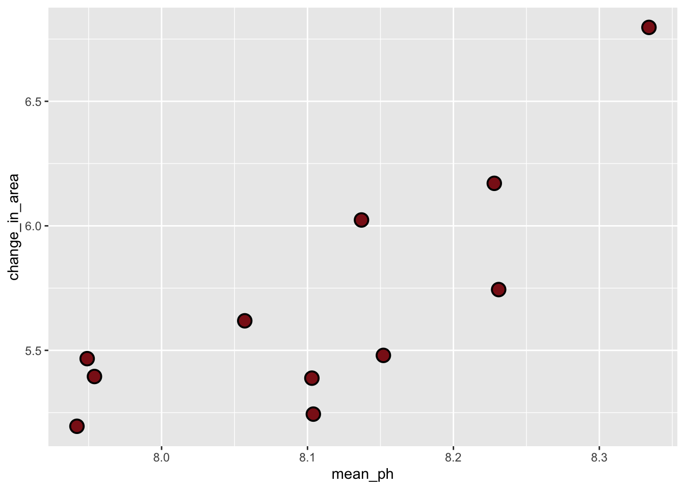
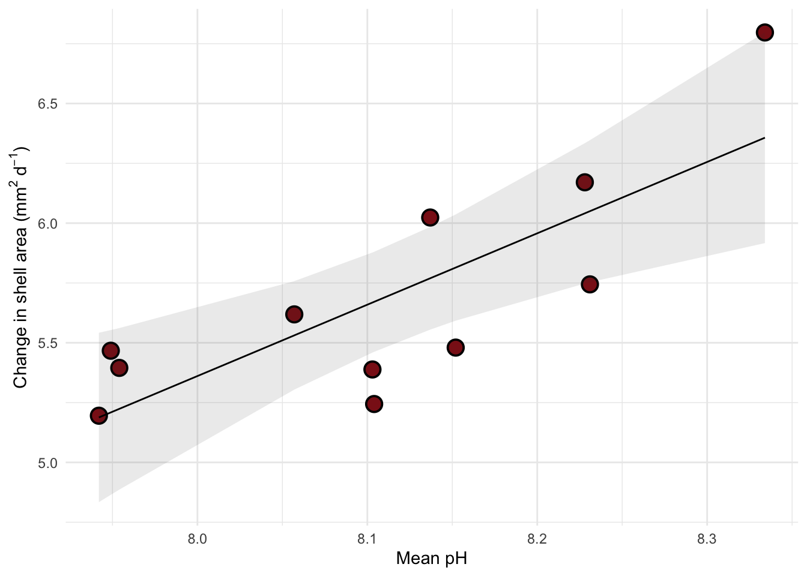

library(tidyverse) # general use
library(janitor) # cleaning data frames
library(here) # file/folder organization
library(readxl) # reading .xlsx files
library(ggeffects) # generating model predictions
library(gtsummary) # generating summary tables for models
# abalone data from Hamilton et al. 2022
abalone <- read_xlsx(here("data", "Abalone IMTA_growth and pH.xlsx"))Linear regression: Abalone growth and pH example
Set up
Abalone example
Data from Hamilton et al. 2022. “Integrated multi-trophic aquaculture mitigates the effects of ocean acidification: Seaweeds raise system pH and improve growth of juvenile abalone.” https://doi.org/10.1016/j.aquaculture.2022.738571
a. Questions and hypotheses
Question: How does pH predict abalone growth (measured in change in shell surface area per day, mm2 d-1)?
H0: pH does not predict abalone growth (change in shell surface area per day mm2 d-1).
HA: pH predicts abalone growth (change in shell surface area per day, mm2 d-1).
b. Cleaning
# creating a new object called abalone_clean from the original dataset
abalone_clean <- abalone |>
# cleaning up all column names
clean_names() |>
# selecting columns of interest
select(mean_p_h, change_in_area_mm2_d_1_25) |>
# renaming column names for easier use
rename(mean_ph = mean_p_h,
change_in_area = change_in_area_mm2_d_1_25)Don’t forget to look at your data! Use View(abalone_clean) in the Console.
c. Exploratory data visualization
# base layer: ggplot call
ggplot(data = abalone_clean, # data set should be clean
aes(x = mean_ph, # predictor variable for x axis
y = change_in_area))+ #response variable for y axis
# first layer: points to represent change in area
geom_point(size = 4,
stroke = 1,
fill = "firebrick4",
shape = 21)
Where does the missing value come from?
Tank B1B where the pH sensor failed.
Don’t forget to turn your warnings off either in the individual code chunk or in the YAML at the top of the file.
d. Abalone model
Model fitting
abalone_model <- lm(
change_in_area ~ mean_ph, #
data = abalone_clean #
)Diagnostics
par(mfrow = c(2, 2)) #
plot(abalone_model) # 
Model summary
# more information about the model
summary(abalone_model)
Call:
lm(formula = change_in_area ~ mean_ph, data = abalone_clean)
Residuals:
Min 1Q Median 3Q Max
-0.42714 -0.29282 0.08769 0.21258 0.43965
Coefficients:
Estimate Std. Error t value Pr(>|t|)
(Intercept) -18.5010 6.1601 -3.003 0.01488 *
mean_ph 2.9827 0.7596 3.926 0.00348 **
---
Signif. codes: 0 '***' 0.001 '**' 0.01 '*' 0.05 '.' 0.1 ' ' 1
Residual standard error: 0.3063 on 9 degrees of freedom
(1 observation deleted due to missingness)
Multiple R-squared: 0.6314, Adjusted R-squared: 0.5905
F-statistic: 15.42 on 1 and 9 DF, p-value: 0.003477What is the slope estimate (with standard error?)
insert your response here
What is the intercept estimate (with standard error?)
insert your response here
Generating predictions
# creating a new object called abalone_preds
abalone_preds <- ggpredict(
abalone_model, # model object
terms = "mean_ph" # predictor (in quotation marks)
)
# display the predictions
abalone_preds# Predicted values of change_in_area
mean_ph | Predicted | 95% CI
--------------------------------
7.94 | 5.19 | 4.83, 5.54
7.95 | 5.21 | 4.86, 5.55
8.06 | 5.53 | 5.30, 5.76
8.10 | 5.67 | 5.46, 5.88
8.10 | 5.67 | 5.46, 5.88
8.14 | 5.77 | 5.55, 5.98
8.15 | 5.81 | 5.59, 6.04
8.33 | 6.36 | 5.92, 6.80Look at the column names using colnames(abalone_preds) in the Console.
What are the column names?
insert your notes here
Look at the actual object (by clicking on it in Environment).
Look at the class of the object using class(abalone_preds) in the Console.
What is this type of object?
insert your notes here
View abalone_preds like a data frame.
Why generate model predictions?
This dataset does not include any actual observations of abalone growth at pH = 8.
However, the model can tell us a prediction for what abalone growth could be if pH = 8 based on the existing data.
Figure out what abalone growth the model would predict at pH = 8.
# finding the model prediction at a specific value
ggpredict(
abalone_model, # model object
terms = "mean_ph[8]" # predictor (in quotation marks) and predictor value in brackets
)# Predicted values of change_in_area
mean_ph | Predicted | 95% CI
--------------------------------
8 | 5.36 | 5.08, 5.64How would you interpret this?
insert your response here
Visualizing model predictions and data
# base layer: ggplot
# using clean data frame
ggplot(data = abalone_clean,
aes(x = mean_ph,
y = change_in_area)) 
# first layer: points representing abalones
geom_point(size = 4,
stroke = 1,
fill = "firebrick4",
shape = 21) geom_point: na.rm = FALSE
stat_identity: na.rm = FALSE
position_identity # second layer: ribbon representing confidence interval
# using predictions data frame
geom_ribbon(data = abalone_preds,
aes(x = x,
y = predicted,
ymin = conf.low,
ymax = conf.high),
alpha = 0.1) mapping: x = ~x, y = ~predicted, ymin = ~conf.low, ymax = ~conf.high
geom_ribbon: na.rm = FALSE, orientation = NA, lineend = butt, linejoin = round, linemitre = 10, outline.type = both
stat_identity: na.rm = FALSE
position_identity # third layer: line representing model predictions
# using predictions data frame
geom_line(data = abalone_preds,
aes(x = x,
y = predicted)) mapping: x = ~x, y = ~predicted
geom_line: na.rm = FALSE, orientation = NA, arrow = NULL, arrow.fill = NULL, lineend = butt, linejoin = round, linemitre = 10
stat_identity: na.rm = FALSE
position_identity # axis labels
labs(x = "Mean pH",
y = expression("Change in shell area ("*mm^{2}~d^-1*")")) <ggplot2::labels> List of 2
$ x: chr "Mean pH"
$ y: expression("Change in shell area (" * mm^{ 2 } ~ d^-1 * ")") # theme
theme_minimal()<theme> List of 144
$ line : <ggplot2::element_line>
..@ colour : chr "black"
..@ linewidth : num 0.5
..@ linetype : num 1
..@ lineend : chr "butt"
..@ linejoin : chr "round"
..@ arrow : logi FALSE
..@ arrow.fill : chr "black"
..@ inherit.blank: logi TRUE
$ rect : <ggplot2::element_rect>
..@ fill : chr "white"
..@ colour : chr "black"
..@ linewidth : num 0.5
..@ linetype : num 1
..@ linejoin : chr "round"
..@ inherit.blank: logi TRUE
$ text : <ggplot2::element_text>
..@ family : chr ""
..@ face : chr "plain"
..@ italic : chr NA
..@ fontweight : num NA
..@ fontwidth : num NA
..@ colour : chr "black"
..@ size : num 11
..@ hjust : num 0.5
..@ vjust : num 0.5
..@ angle : num 0
..@ lineheight : num 0.9
..@ margin : <ggplot2::margin> num [1:4] 0 0 0 0
..@ debug : logi FALSE
..@ inherit.blank: logi TRUE
$ title : <ggplot2::element_text>
..@ family : NULL
..@ face : NULL
..@ italic : chr NA
..@ fontweight : num NA
..@ fontwidth : num NA
..@ colour : NULL
..@ size : NULL
..@ hjust : NULL
..@ vjust : NULL
..@ angle : NULL
..@ lineheight : NULL
..@ margin : NULL
..@ debug : NULL
..@ inherit.blank: logi TRUE
$ point : <ggplot2::element_point>
..@ colour : chr "black"
..@ shape : num 19
..@ size : num 1.5
..@ fill : chr "white"
..@ stroke : num 0.5
..@ inherit.blank: logi TRUE
$ polygon : <ggplot2::element_polygon>
..@ fill : chr "white"
..@ colour : chr "black"
..@ linewidth : num 0.5
..@ linetype : num 1
..@ linejoin : chr "round"
..@ inherit.blank: logi TRUE
$ geom : <ggplot2::element_geom>
..@ ink : chr "black"
..@ paper : chr "white"
..@ accent : chr "#3366FF"
..@ linewidth : num 0.5
..@ borderwidth: num 0.5
..@ linetype : int 1
..@ bordertype : int 1
..@ family : chr ""
..@ fontsize : num 3.87
..@ pointsize : num 1.5
..@ pointshape : num 19
..@ colour : NULL
..@ fill : NULL
$ spacing : 'simpleUnit' num 5.5points
..- attr(*, "unit")= int 8
$ margins : <ggplot2::margin> num [1:4] 5.5 5.5 5.5 5.5
$ aspect.ratio : NULL
$ axis.title : NULL
$ axis.title.x : <ggplot2::element_text>
..@ family : NULL
..@ face : NULL
..@ italic : chr NA
..@ fontweight : num NA
..@ fontwidth : num NA
..@ colour : NULL
..@ size : NULL
..@ hjust : NULL
..@ vjust : num 1
..@ angle : NULL
..@ lineheight : NULL
..@ margin : <ggplot2::margin> num [1:4] 2.75 0 0 0
..@ debug : NULL
..@ inherit.blank: logi TRUE
$ axis.title.x.top : <ggplot2::element_text>
..@ family : NULL
..@ face : NULL
..@ italic : chr NA
..@ fontweight : num NA
..@ fontwidth : num NA
..@ colour : NULL
..@ size : NULL
..@ hjust : NULL
..@ vjust : num 0
..@ angle : NULL
..@ lineheight : NULL
..@ margin : <ggplot2::margin> num [1:4] 0 0 2.75 0
..@ debug : NULL
..@ inherit.blank: logi TRUE
$ axis.title.x.bottom : NULL
$ axis.title.y : <ggplot2::element_text>
..@ family : NULL
..@ face : NULL
..@ italic : chr NA
..@ fontweight : num NA
..@ fontwidth : num NA
..@ colour : NULL
..@ size : NULL
..@ hjust : NULL
..@ vjust : num 1
..@ angle : num 90
..@ lineheight : NULL
..@ margin : <ggplot2::margin> num [1:4] 0 2.75 0 0
..@ debug : NULL
..@ inherit.blank: logi TRUE
$ axis.title.y.left : NULL
$ axis.title.y.right : <ggplot2::element_text>
..@ family : NULL
..@ face : NULL
..@ italic : chr NA
..@ fontweight : num NA
..@ fontwidth : num NA
..@ colour : NULL
..@ size : NULL
..@ hjust : NULL
..@ vjust : num 1
..@ angle : num -90
..@ lineheight : NULL
..@ margin : <ggplot2::margin> num [1:4] 0 0 0 2.75
..@ debug : NULL
..@ inherit.blank: logi TRUE
$ axis.text : <ggplot2::element_text>
..@ family : NULL
..@ face : NULL
..@ italic : chr NA
..@ fontweight : num NA
..@ fontwidth : num NA
..@ colour : chr "#4D4D4DFF"
..@ size : 'rel' num 0.8
..@ hjust : NULL
..@ vjust : NULL
..@ angle : NULL
..@ lineheight : NULL
..@ margin : NULL
..@ debug : NULL
..@ inherit.blank: logi TRUE
$ axis.text.x : <ggplot2::element_text>
..@ family : NULL
..@ face : NULL
..@ italic : chr NA
..@ fontweight : num NA
..@ fontwidth : num NA
..@ colour : NULL
..@ size : NULL
..@ hjust : NULL
..@ vjust : num 1
..@ angle : NULL
..@ lineheight : NULL
..@ margin : <ggplot2::margin> num [1:4] 2.2 0 0 0
..@ debug : NULL
..@ inherit.blank: logi TRUE
$ axis.text.x.top : <ggplot2::element_text>
..@ family : NULL
..@ face : NULL
..@ italic : chr NA
..@ fontweight : num NA
..@ fontwidth : num NA
..@ colour : NULL
..@ size : NULL
..@ hjust : NULL
..@ vjust : NULL
..@ angle : NULL
..@ lineheight : NULL
..@ margin : <ggplot2::margin> num [1:4] 0 0 4.95 0
..@ debug : NULL
..@ inherit.blank: logi TRUE
$ axis.text.x.bottom : <ggplot2::element_text>
..@ family : NULL
..@ face : NULL
..@ italic : chr NA
..@ fontweight : num NA
..@ fontwidth : num NA
..@ colour : NULL
..@ size : NULL
..@ hjust : NULL
..@ vjust : NULL
..@ angle : NULL
..@ lineheight : NULL
..@ margin : <ggplot2::margin> num [1:4] 4.95 0 0 0
..@ debug : NULL
..@ inherit.blank: logi TRUE
$ axis.text.y : <ggplot2::element_text>
..@ family : NULL
..@ face : NULL
..@ italic : chr NA
..@ fontweight : num NA
..@ fontwidth : num NA
..@ colour : NULL
..@ size : NULL
..@ hjust : num 1
..@ vjust : NULL
..@ angle : NULL
..@ lineheight : NULL
..@ margin : <ggplot2::margin> num [1:4] 0 2.2 0 0
..@ debug : NULL
..@ inherit.blank: logi TRUE
$ axis.text.y.left : <ggplot2::element_text>
..@ family : NULL
..@ face : NULL
..@ italic : chr NA
..@ fontweight : num NA
..@ fontwidth : num NA
..@ colour : NULL
..@ size : NULL
..@ hjust : NULL
..@ vjust : NULL
..@ angle : NULL
..@ lineheight : NULL
..@ margin : <ggplot2::margin> num [1:4] 0 4.95 0 0
..@ debug : NULL
..@ inherit.blank: logi TRUE
$ axis.text.y.right : <ggplot2::element_text>
..@ family : NULL
..@ face : NULL
..@ italic : chr NA
..@ fontweight : num NA
..@ fontwidth : num NA
..@ colour : NULL
..@ size : NULL
..@ hjust : NULL
..@ vjust : NULL
..@ angle : NULL
..@ lineheight : NULL
..@ margin : <ggplot2::margin> num [1:4] 0 0 0 4.95
..@ debug : NULL
..@ inherit.blank: logi TRUE
$ axis.text.theta : NULL
$ axis.text.r : <ggplot2::element_text>
..@ family : NULL
..@ face : NULL
..@ italic : chr NA
..@ fontweight : num NA
..@ fontwidth : num NA
..@ colour : NULL
..@ size : NULL
..@ hjust : num 0.5
..@ vjust : NULL
..@ angle : NULL
..@ lineheight : NULL
..@ margin : <ggplot2::margin> num [1:4] 0 2.2 0 2.2
..@ debug : NULL
..@ inherit.blank: logi TRUE
$ axis.ticks : <ggplot2::element_blank>
$ axis.ticks.x : NULL
$ axis.ticks.x.top : NULL
$ axis.ticks.x.bottom : NULL
$ axis.ticks.y : NULL
$ axis.ticks.y.left : NULL
$ axis.ticks.y.right : NULL
$ axis.ticks.theta : NULL
$ axis.ticks.r : NULL
$ axis.minor.ticks.x.top : NULL
$ axis.minor.ticks.x.bottom : NULL
$ axis.minor.ticks.y.left : NULL
$ axis.minor.ticks.y.right : NULL
$ axis.minor.ticks.theta : NULL
$ axis.minor.ticks.r : NULL
$ axis.ticks.length : 'rel' num 0.5
$ axis.ticks.length.x : NULL
$ axis.ticks.length.x.top : NULL
$ axis.ticks.length.x.bottom : NULL
$ axis.ticks.length.y : NULL
$ axis.ticks.length.y.left : NULL
$ axis.ticks.length.y.right : NULL
$ axis.ticks.length.theta : NULL
$ axis.ticks.length.r : NULL
$ axis.minor.ticks.length : 'rel' num 0.75
$ axis.minor.ticks.length.x : NULL
$ axis.minor.ticks.length.x.top : NULL
$ axis.minor.ticks.length.x.bottom: NULL
$ axis.minor.ticks.length.y : NULL
$ axis.minor.ticks.length.y.left : NULL
$ axis.minor.ticks.length.y.right : NULL
$ axis.minor.ticks.length.theta : NULL
$ axis.minor.ticks.length.r : NULL
$ axis.line : <ggplot2::element_blank>
$ axis.line.x : NULL
$ axis.line.x.top : NULL
$ axis.line.x.bottom : NULL
$ axis.line.y : NULL
$ axis.line.y.left : NULL
$ axis.line.y.right : NULL
$ axis.line.theta : NULL
$ axis.line.r : NULL
$ legend.background : <ggplot2::element_blank>
$ legend.margin : NULL
$ legend.spacing : 'rel' num 2
$ legend.spacing.x : NULL
$ legend.spacing.y : NULL
$ legend.key : <ggplot2::element_blank>
$ legend.key.size : 'simpleUnit' num 1.2lines
..- attr(*, "unit")= int 3
$ legend.key.height : NULL
$ legend.key.width : NULL
$ legend.key.spacing : NULL
$ legend.key.spacing.x : NULL
$ legend.key.spacing.y : NULL
$ legend.key.justification : NULL
$ legend.frame : NULL
$ legend.ticks : NULL
$ legend.ticks.length : 'rel' num 0.2
$ legend.axis.line : NULL
$ legend.text : <ggplot2::element_text>
..@ family : NULL
..@ face : NULL
..@ italic : chr NA
..@ fontweight : num NA
..@ fontwidth : num NA
..@ colour : NULL
..@ size : 'rel' num 0.8
..@ hjust : NULL
..@ vjust : NULL
..@ angle : NULL
..@ lineheight : NULL
..@ margin : NULL
..@ debug : NULL
..@ inherit.blank: logi TRUE
$ legend.text.position : NULL
$ legend.title : <ggplot2::element_text>
..@ family : NULL
..@ face : NULL
..@ italic : chr NA
..@ fontweight : num NA
..@ fontwidth : num NA
..@ colour : NULL
..@ size : NULL
..@ hjust : num 0
..@ vjust : NULL
..@ angle : NULL
..@ lineheight : NULL
..@ margin : NULL
..@ debug : NULL
..@ inherit.blank: logi TRUE
$ legend.title.position : NULL
$ legend.position : chr "right"
$ legend.position.inside : NULL
$ legend.direction : NULL
$ legend.byrow : NULL
$ legend.justification : chr "center"
$ legend.justification.top : NULL
$ legend.justification.bottom : NULL
$ legend.justification.left : NULL
$ legend.justification.right : NULL
$ legend.justification.inside : NULL
[list output truncated]
@ complete: logi TRUE
@ validate: logi TRUECreating a table with model coefficients, 95% confidence intervals, and more
Note: both these functions are from gtsummary.
#tbl_regression(abalone_model,
# make sure the y-intercept estimate is shown
# intercept = TRUE,
# changing labels in "Characteristic" column
# label = list(`(Intercept)` = "Intercept",
# mean_ph = "pH")) |>
# changing header text
# modify_header(label = "**Variable**",
# estimate = "**Estimate**") |>
# turning table into a flextable (makes things easier to render to word or PDF)
# as_flex_table()END OF ABALONE EXAMPLE